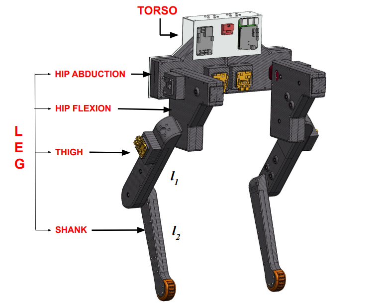
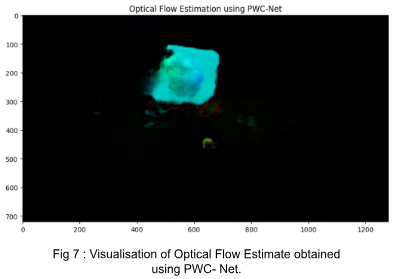
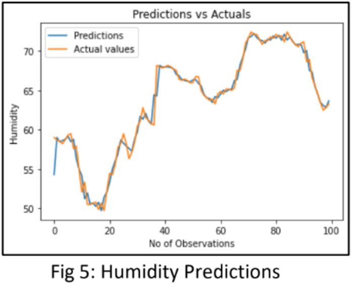
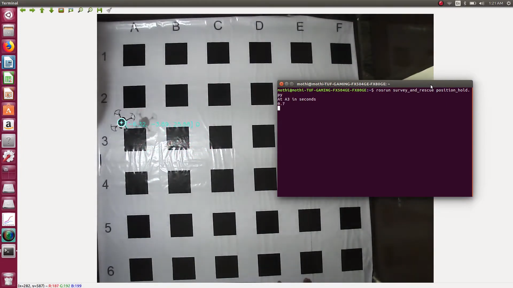
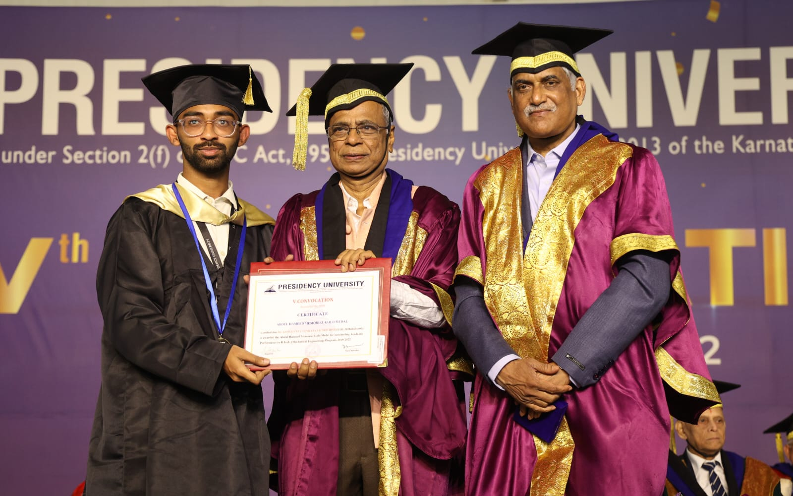
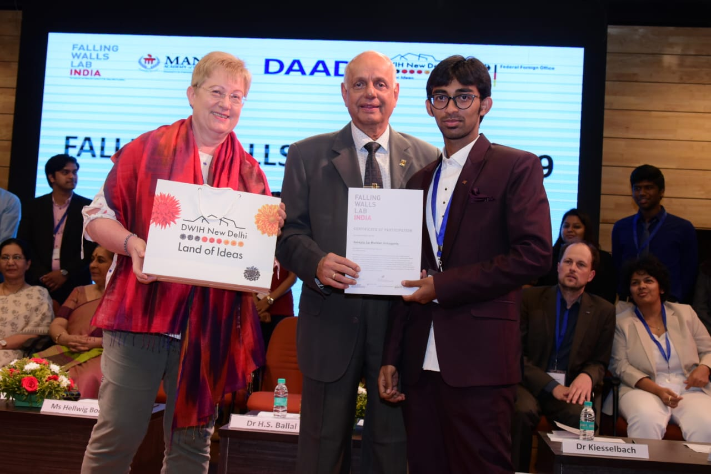

I am currently a Phd Student at Computational and Data Sciences (CDS) in IISc, Bangalore, India, working on Generative models, Computer Vision, Time Series Applications and Robot Learning under the supervision of Dr. Deepak Subramani. Prior to this, I completed my MTech Robotics and Autonomous systems at RBCCPS in IISc, Bangalore, India, where I focused on Reinforcement Learning based locomotion of walking robots, under the guidance of Dr.Shishir.N.Y at Stochastic Robotics Lab at IISC
My research primarily involves Generative Models, Computer Vision, Time Series, Reinforcement Learning, and Robot Learning. I am particularly interested in developing Intelligent Stochastic Systems.
Conditional Diffusion Model with Nonlinear Data Transformation for Time Series Forecasting
J Rishi*, GVS Mothish* , Deepak Subramani
Accepted @ ICML , 2025 ; Primary Area: Deep Learning->Generative Models and Autoencoders
Conditional Diffusion with Nonlinear Data Transformation Model (CN-Diff), a generative framework that employs novel nonlinear transformations and learnable conditions in the forward process for time series forecasting. A new loss formulation for training is proposed, along with a detailed derivation of both forward and reverse process.
BiRoDiff: Diffusion policies for bipedal robot locomotion on unseen terrains GVS Mothish, Manan Tayal, Shishir Kolathaya
ICC , 2024
project page
/
video
/
paper
We have designed a real-time robot controller based on diffusion models, which not only captures multiple behaviours with different velocities in a single policy but also generalizes well for unseen terrains. Our controller learns with offline data, which is better than online learning in aspects like scalability, simplicity in training scheme etc.
A multimodal intent prediction algorithm involving hand and eye gaze using Bayesian fusion. Inverse reinforcement learning was leveraged to learn human preferences for the human-robot handover task.

Stoch BiRo: Design and Control of a Low-cost Bipedal Robot GVS Mothish , Karthik Rajgopal, Ravi Kola, Manan Tayal, Shishir Kolathaya
ICCAR , 2024
project page
/
video
/
paper
This paper introduces the Stoch BiRo, a cost-effective bipedal robot designed with a modular mechanical structure having point feet to navigate uneven and unfamiliar terrains. The robot employs proprioceptive actuation in abduction, hips, and knees, leveraging a Raspberry Pi4 for control.
Other Projects

Estimation of Vehicle Speed using Computer Vision | Pytorch, OpenCV, CNN
Apr 2023
project info
• This was developed as a part of coursework for Robotic Perception course.
• PWC-NET a CNN-based approach was used to estimate the optical flow from the successive video
frames.
• Yolo V5 was used for object detection in the given frame.
• Calculated the relative movement of predicted object’s movement with optical flow vectors

Bayesian Imputation for Missing Sensor Data in IoT Devices | Keras, Pytorch, LSTM
Mar 2023
project info
• Aim: Predict missing values in IoT sensor data (temperature and humidity) using Bayesian methods.
• Phases: Data analysis, pre-processing, and transitioning from Frequentist to Bayesian approaches.
• Bayesian Models: Bayesian Ridge Regression, Gaussian Process Regression, and PyMC3
used for accurate imputation.
Automated Driver Assistance System | Pytorch, TensorFlow, CNN
Jun 2023
project info
• Object detection (Yolo) and Lane Detection (UltraFast Lane detector) module was developed
using pytorch framework. While the Depth Estimation (MiDaS) was developed using TensorFlow
framework.
• The inference time of the model was optimized using the Intel oneAPI Deep Neural Network
Library on the intel’s developer’s cloud.
• A performance speedup of approximately 4.5x was achieved using the oneAPI libraries.

Autonomous Navigation of an Unmanned Aerial Vehicle in controlled environments. | ROS, C++
2020
video
This is a Sponsored project under the supervision of Eyantra IIT-Bombay and MHRD, and a part of the Robotics Competition organized by Eyantra.
Awards and Acheivements

University Gold Medal in bachelor's degree.
5th convocation Presidency University , 2022
website
For the Outstanding academic performance in B.Tech

Finalist in FALLING WALLS LAB INDIA 2019.
German Centre for Research (DWIH) and Innovation and DAAD conference link
Theme: Breaking the wall of irrigation challenges with Machine Learning and Internet of Things
{kind=link}